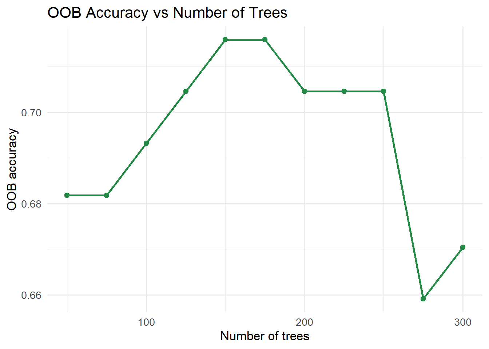
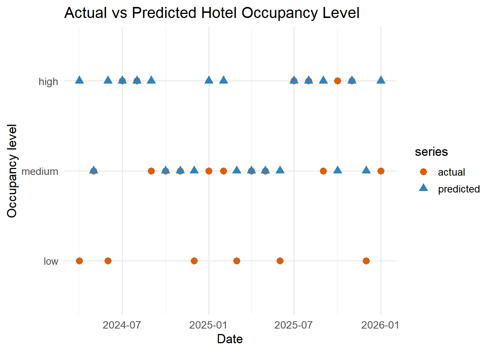

Show the code
pacman::p_load(
tidyverse,
rpart,
rpart.plot,
caret,
visNetwork,
htmlwidgets,
sparkline
)pacman::p_load(
tidyverse,
rpart,
rpart.plot,
caret,
visNetwork,
htmlwidgets,
sparkline
)base_dir <- "D:/GitHub/Qinhao/ISSS608-VAA/Take-home-exercise/Take-Home-Exercise2"
data_path <- file.path(base_dir, "data", "tourism_decision_tree_ready.csv")
output_dir <- file.path(base_dir, "outputs")
dir.create(output_dir, recursive = TRUE, showWarnings = FALSE)df <- readr::read_csv(data_path, show_col_types = FALSE) %>%
mutate(
date = as.Date(date),
month = factor(
month,
levels = 1:12,
labels = c("Jan", "Feb", "Mar", "Apr", "May", "Jun",
"Jul", "Aug", "Sep", "Oct", "Nov", "Dec")
),
quarter = factor(quarter),
period = factor(period, levels = c("pre_covid", "covid_shock", "recovery")),
dataset_split = factor(dataset_split, levels = c("train", "test")),
hotel_occ_level_tertile = factor(
hotel_occ_level_tertile,
levels = c("low", "medium", "high")
),
# 为了让树图上的阈值更易读，创建展示型变量
arrivals_million = visitor_arrivals / 1000000,
china_share_pct = china_share * 100,
stay_days = avg_stay_monthly_capped
)
glimpse(df)Rows: 110
Columns: 17
$ date <date> 2016-12-01, 2017-01-01, 2017-02-01, 2017-03-…
$ year <dbl> 2016, 2017, 2017, 2017, 2017, 2017, 2017, 201…
$ month <fct> Dec, Jan, Feb, Mar, Apr, May, Jun, Jul, Aug, …
$ quarter <fct> 4, 1, 1, 1, 2, 2, 2, 3, 3, 3, 4, 4, 4, 1, 1, …
$ period <fct> pre_covid, pre_covid, pre_covid, pre_covid, p…
$ visitor_arrivals <dbl> 1506134, 1480479, 1361010, 1480161, 1470750, …
$ visitor_arrivals_china <dbl> 226020, 316805, 268993, 264711, 252135, 23236…
$ china_share <dbl> 0.1500663, 0.2139882, 0.1976422, 0.1788393, 0…
$ china_share_pct <dbl> 15.00663, 21.39882, 19.76422, 17.88393, 17.14…
$ hotel_occ <dbl> 79.61207, 81.76737, 88.02775, 84.67201, 85.06…
$ avg_stay_monthly <dbl> 3.214346, 3.517353, 3.423516, 3.150551, 3.280…
$ avg_stay_monthly_capped <dbl> 3.214346, 3.517353, 3.423516, 3.150551, 3.280…
$ hotel_occ_level_tertile <fct> medium, medium, high, high, high, medium, med…
$ hotel_occ_level_business <chr> "medium", "medium", "high", "medium", "high",…
$ dataset_split <fct> train, train, train, train, train, train, tra…
$ arrivals_million <dbl> 1.506134, 1.480479, 1.361010, 1.480161, 1.470…
$ stay_days <dbl> 3.214346, 3.517353, 3.423516, 3.150551, 3.280…train_df <- df %>% filter(dataset_split == "train")
test_df <- df %>% filter(dataset_split == "test")
cat("Train rows:", nrow(train_df), "\n")Train rows: 88 cat("Test rows:", nrow(test_df), "\n")Test rows: 22 set.seed(1234)
ctrl <- trainControl(
method = "repeatedcv",
number = 5,
repeats = 3,
classProbs = TRUE
)
grid <- expand.grid(
mtry = c(2, 3, 4),
splitrule = "gini",
min.node.size = c(1, 3, 5)
)
rf_model <- caret::train(
hotel_occ_level_tertile ~ arrivals_million + china_share_pct + stay_days + month,
data = train_df,
method = "ranger",
trControl = ctrl,
tuneGrid = grid,
num.trees = 300,
importance = "impurity",
metric = "Accuracy"
)
print(rf_model)Random Forest
88 samples
4 predictor
3 classes: 'low', 'medium', 'high'
No pre-processing
Resampling: Cross-Validated (5 fold, repeated 3 times)
Summary of sample sizes: 70, 71, 70, 70, 71, 70, ...
Resampling results across tuning parameters:
mtry min.node.size Accuracy Kappa
2 1 0.7418301 0.6093103
2 3 0.7307190 0.5930416
2 5 0.7383442 0.6044631
3 1 0.7383442 0.6046287
3 3 0.7305011 0.5927131
3 5 0.7346405 0.5996972
4 1 0.7457516 0.6159337
4 3 0.7344227 0.5988396
4 5 0.7342048 0.5984216
Tuning parameter 'splitrule' was held constant at a value of gini
Accuracy was used to select the optimal model using the largest value.
The final values used for the model were mtry = 4, splitrule = gini
and min.node.size = 1.print(rf_model$bestTune) mtry splitrule min.node.size
7 4 gini 1pred_class <- predict(rf_model, newdata = test_df)
pred_prob <- predict(rf_model, newdata = test_df, type = "prob")
pred_class <- factor(pred_class, levels = c("low", "medium", "high"))
test_df$hotel_occ_level_tertile <- factor(
test_df$hotel_occ_level_tertile,
levels = c("low", "medium", "high")
)cm <- caret::confusionMatrix(
data = pred_class,
reference = test_df$hotel_occ_level_tertile
)
print(cm)Confusion Matrix and Statistics
Reference
Prediction low medium high
low 0 0 0
medium 4 5 1
high 2 5 5
Overall Statistics
Accuracy : 0.4545
95% CI : (0.2439, 0.6779)
No Information Rate : 0.4545
P-Value [Acc > NIR] : 0.58197
Kappa : 0.1538
Mcnemar's Test P-Value : 0.03407
Statistics by Class:
Class: low Class: medium Class: high
Sensitivity 0.0000 0.5000 0.8333
Specificity 1.0000 0.5833 0.5625
Pos Pred Value NaN 0.5000 0.4167
Neg Pred Value 0.7273 0.5833 0.9000
Prevalence 0.2727 0.4545 0.2727
Detection Rate 0.0000 0.2273 0.2273
Detection Prevalence 0.0000 0.4545 0.5455
Balanced Accuracy 0.5000 0.5417 0.6979metrics_tbl <- tibble(
metric = c("accuracy", "kappa"),
value = c(cm$overall[["Accuracy"]], cm$overall[["Kappa"]])
)
print(metrics_tbl)# A tibble: 2 × 2
metric value
<chr> <dbl>
1 accuracy 0.455
2 kappa 0.154importance_tbl <- varImp(rf_model)$importance %>%
tibble::rownames_to_column("variable") %>%
arrange(desc(Overall))
print(importance_tbl) variable Overall
1 arrivals_million 100.000000
2 stay_days 98.474771
3 china_share_pct 75.164831
4 monthDec 9.978753
5 monthMay 7.612103
6 monthNov 7.266777
7 monthOct 5.054497
8 monthFeb 4.548187
9 monthAug 4.084512
10 monthJul 3.908262
11 monthJun 1.531650
12 monthSep 1.491992
13 monthMar 1.009493
14 monthApr 0.000000conf_tbl <- as.data.frame(cm$table)
conf_plot <- ggplot(conf_tbl, aes(x = Reference, y = Prediction, fill = Freq)) +
geom_tile(color = "white") +
geom_text(aes(label = Freq), size = 5) +
scale_fill_gradient(low = "#f7fbff", high = "#08519c") +
labs(
title = "Random Forest Confusion Matrix",
x = "Actual class",
y = "Predicted class",
fill = "Count"
) +
theme_minimal(base_size = 13)
print(conf_plot)
ggsave(
filename = file.path(output_dir, "random_forest_confusion_heatmap.png"),
plot = conf_plot,
width = 8,
height = 6,
dpi = 200
)importance_plot <- importance_tbl %>%
slice_max(order_by = Overall, n = 10) %>%
ggplot(aes(x = reorder(variable, Overall), y = Overall)) +
geom_col(fill = "#2c7fb8") +
coord_flip() +
labs(
title = "Random Forest Variable Importance",
x = NULL,
y = "Importance"
) +
theme_minimal(base_size = 13)
print(importance_plot)
ggsave(
filename = file.path(output_dir, "random_forest_importance.png"),
plot = importance_plot,
width = 8,
height = 6,
dpi = 200
)tree_grid <- seq(50, 300, by = 25)
oob_tbl <- purrr::map_dfr(tree_grid, function(nt) {
mod <- ranger::ranger(
hotel_occ_level_tertile ~ arrivals_million + china_share_pct + stay_days + month,
data = train_df,
num.trees = nt,
mtry = rf_model$bestTune$mtry,
min.node.size = rf_model$bestTune$min.node.size,
splitrule = as.character(rf_model$bestTune$splitrule),
importance = "impurity",
seed = 1234
)
tibble(
num_trees = nt,
oob_error = mod$prediction.error,
oob_accuracy = 1 - mod$prediction.error
)
})
print(oob_tbl)# A tibble: 11 × 3
num_trees oob_error oob_accuracy
<dbl> <dbl> <dbl>
1 50 0.318 0.682
2 75 0.318 0.682
3 100 0.307 0.693
4 125 0.295 0.705
5 150 0.284 0.716
6 175 0.284 0.716
7 200 0.295 0.705
8 225 0.295 0.705
9 250 0.295 0.705
10 275 0.341 0.659
11 300 0.330 0.670oob_plot <- ggplot(oob_tbl, aes(x = num_trees, y = oob_accuracy)) +
geom_line(color = "#238b45", linewidth = 1) +
geom_point(color = "#238b45", size = 2) +
labs(
title = "OOB Accuracy vs Number of Trees",
x = "Number of trees",
y = "OOB accuracy"
) +
theme_minimal(base_size = 13)
print(oob_plot)
ggsave(
filename = file.path(output_dir, "random_forest_oob_accuracy.png"),
plot = oob_plot,
width = 8,
height = 6,
dpi = 200
)pred_plot_df <- test_df %>%
transmute(
date,
actual = hotel_occ_level_tertile,
predicted = pred_class
) %>%
pivot_longer(
cols = c(actual, predicted),
names_to = "series",
values_to = "level"
)
pred_plot <- ggplot(pred_plot_df, aes(x = date, y = level, color = series, shape = series)) +
geom_point(size = 3) +
labs(
title = "Actual vs Predicted Hotel Occupancy Level",
x = "Date",
y = "Occupancy level"
) +
scale_color_manual(values = c(actual = "#d95f0e", predicted = "#3182bd")) +
theme_minimal(base_size = 13)
print(pred_plot)
ggsave(
filename = file.path(output_dir, "random_forest_actual_vs_predicted.png"),
plot = pred_plot,
width = 9,
height = 5,
dpi = 200
)write.csv(
metrics_tbl,
file.path(output_dir, "random_forest_metrics.csv"),
row.names = FALSE
)
write.csv(
conf_tbl,
file.path(output_dir, "random_forest_confusion_matrix.csv"),
row.names = FALSE
)
write.csv(
importance_tbl,
file.path(output_dir, "random_forest_variable_importance.csv"),
row.names = FALSE
)
write.csv(
oob_tbl,
file.path(output_dir, "random_forest_oob_accuracy.csv"),
row.names = FALSE
)
prediction_tbl <- bind_cols(
test_df %>% select(date, hotel_occ_level_tertile),
tibble(predicted_class = pred_class),
pred_prob
)
write.csv(
prediction_tbl,
file.path(output_dir, "random_forest_test_predictions.csv"),
row.names = FALSE
)
cat("Random forest analysis complete.\n")Random forest analysis complete.cat("Outputs saved to:", output_dir, "\n")Outputs saved to: D:/GitHub/Qinhao/ISSS608-VAA/Take-home-exercise/Take-Home-Exercise2/outputs